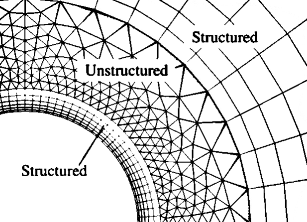
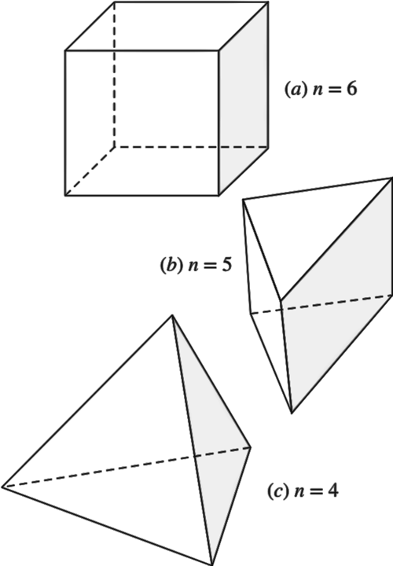

A hybrid grid is one that combines regions or blocks of structured and unstructured grids.
For example, you can mate a structured grid
block close to a wall with an unstructured grid block outside of the region of influence of the boundary layer.
A hybrid grid is often used to enable high resolution near a wall without requiring high resolution away from the wall


If a four-sided 2-D face with structured cells is swept in the third dimension, a fully structured 3-D mesh is produced, consisting of hexahedral cells (n = 6 faces per cell).
When a 2-D face with unstructured triangular cells is swept in the third direction, the 3-D mesh can consist of prism cells (n = 5 faces per cell) or tetrahedral cells (n = 4 faces per cell—like a pyramid).
The most recent enhancement in grid generation is the use of polyhedral meshes, such a mesh consists of cells of many faces, called polyhedral cells.
Time spent generating a good grid is time well spent, since the CFD results will be more reliable and may converge more rapidly.
A high-quality grid is critical to an accurate CFD solution; a poorly resolved or low-quality grid may even lead to an incorrect solution.
It is important for users of CFD to test if their solution is grid independent. The standard method to test for grid independence is to increase the resolution (by a factor of 2 in all directions if feasible) and repeat the simulation.
1Fluid Mechanics: Fundamentals and Applications Fourth Edition. Çengel and J. M. Cimbala, McGraw-Hill, New York (2018)